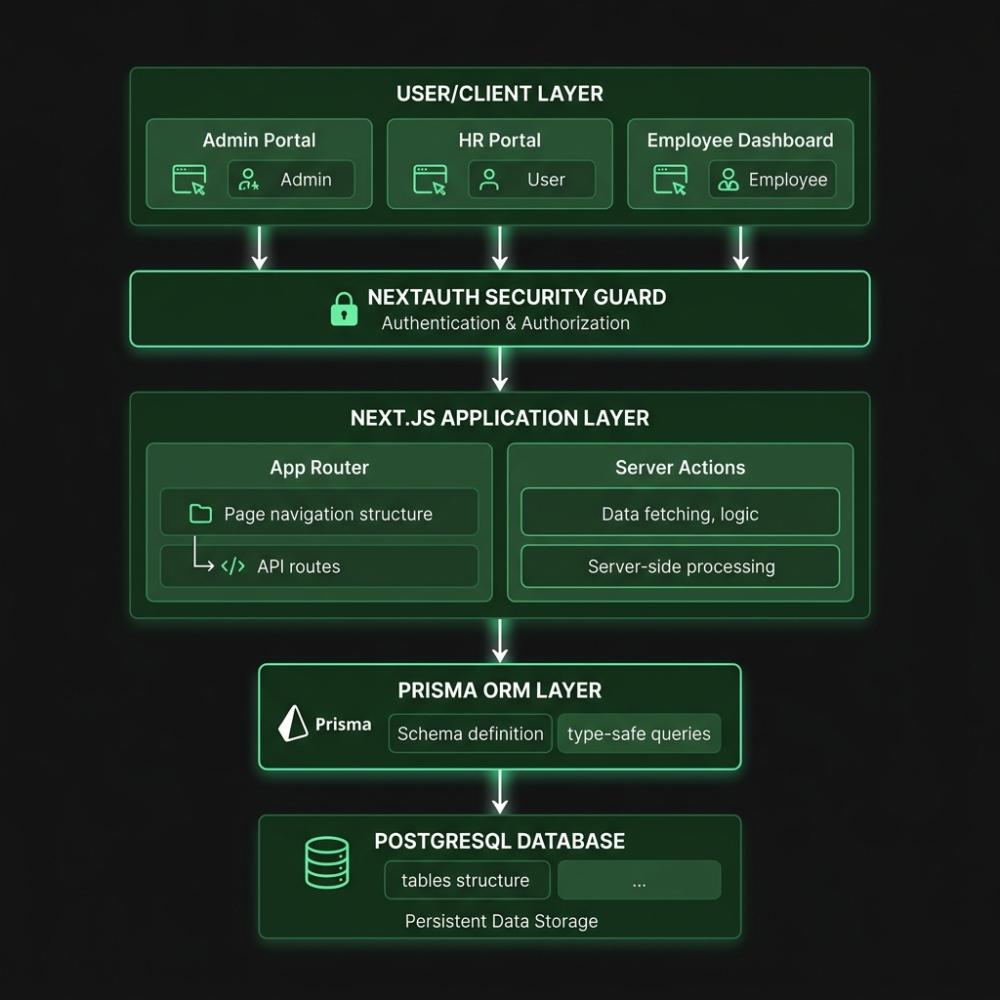

Next-Gen Timesheet & Resource Staffing Platform
Automating compliance checking, database hygiene, and self-service resource allocation.
Next.js App Router & Server Actions for sub-second, dynamic page renders.
PostgreSQL database with Prisma ORM for fully type-safe queries and schemas.
NextAuth integration providing robust role-based access control (RBAC).

Automates staffing cycles from days to clicks, allowing managers to allocate team members instantly.
Maintains audit trail with zero manual oversight. Automated comment scrubbing guarantees high compliance data accuracy.
Engineered to support rapid growth. Clean PostgreSQL schemas and optimized Next.js render pipelines guarantee sub-second updates.